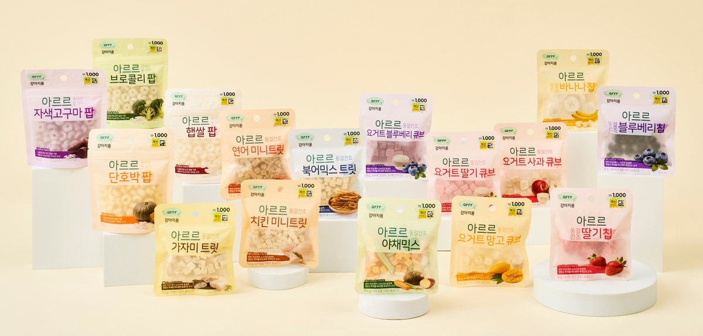
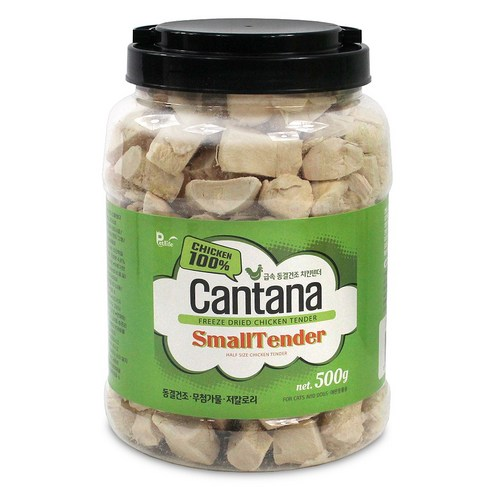
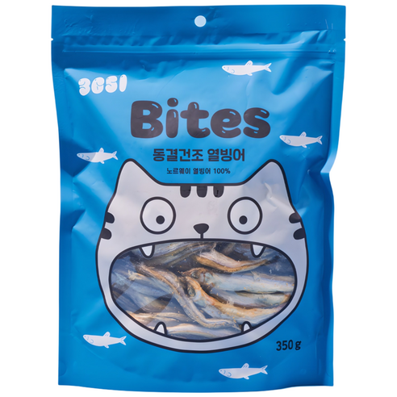
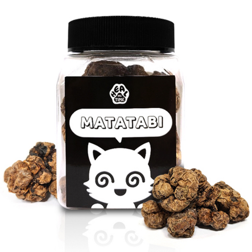
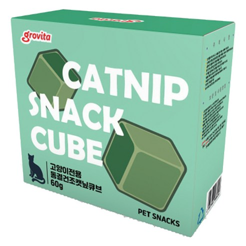

1. 다이소는 소용량 체험형
다이소는 10~20g, 1,000원·2,000원 중심으로 유지합니다. 동결건조 원물 단품보다 사료에 뿌리는 토핑·밥꾸 콘셉트가 OSP 정체성과 맞습니다.
다이소 저가 소용량, 쿠팡·코스트코 500g 대용량, 네이버 브랜드 확장 판매를 전제로 동결건조 토핑뿐 아니라 시니어 소프트 트릿과 저칼로리 노즈워크 미니 트릿까지 확장 검토한 보고안입니다.
현재 시장은 1,000원 체험형과 500g 대용량 가성비형이 동시에 움직이고 있습니다. OSP는 사료회사라는 강점을 활용해 토핑·급여 경험을 연결하는 쪽이 유리합니다.
다이소는 10~20g, 1,000원·2,000원 중심으로 유지합니다. 동결건조 원물 단품보다 사료에 뿌리는 토핑·밥꾸 콘셉트가 OSP 정체성과 맞습니다.
대용량은 17,900~19,900원대 500g 경쟁이 강하고, 노즈워크 미니 트릿은 200g 12,900원대 프리미엄형으로 접근합니다. 19,900원 500g 기준 당사 총원가는 8,231~9,407원 안에 들어와야 합니다.
시니어 소프트 트릿은 아직 시장이 작지만 반려동물 고령화와 건강관리 니즈로 성장 명분이 뚜렷합니다. OSP는 사료회사 이미지와 연결해 선점형 SKU로 검토할 수 있습니다.
같은 원료를 쓰더라도 채널별 소비 목적이 다르므로 용량, 메시지, 패키지, 가격 기준을 다르게 가져갑니다.
10~20g 소용량. 밥꾸·토핑·크럼블형 중심. 원물 단품보다 “사료에 뿌리는 간식”으로 차별화.
생선믹스 500g과 노즈워크 미니 200g을 우선 테스트. 마따따비는 고양이 검색형 SKU로 별도 검토.
쿠팡과 같은 용량·가격대 가능. 생선믹스, 노즈워크 500g, 시니어 소프트 600g은 전용 패키지 필요.
코스트코 전용 제품 제외. 소용량, 대용량, 마따따비, 토핑형, 시니어·노즈워크 라인을 모두 취급.
현재 논의 제품은 생선믹스 크럼블, 사료 토핑, 마따따비입니다. 세 제품 모두 “간식”이지만 구매 동기가 다릅니다.
동결건조 외에 상해 박람회 또는 별도 직수입으로 검토할 만한 카테고리입니다. 모두 OSP의 사료회사 이미지와 연결하기 좋습니다.
| 구분 | 시장 형성도 | 근거 프록시 | 보고 문안 |
|---|---|---|---|
| 시니어 소프트 트릿 | 초기~중간 | 노견/시니어/말랑한 간식 키워드와 리뷰 1,000개 이상 상품 존재. | 아직 시장은 작지만 반려동물 고령화와 건강관리 니즈 확대에 따라 성장 가능성이 높은 초기 카테고리. |
| 저칼로리 노즈워크 미니 트릿 | 중간~높음 | 저칼로리, 노즈워크, 훈련용, 칭찬간식 키워드가 결합된 상품과 리뷰 축적 확인. | 이미 반복구매 시장이 형성되어 있어 가격·기호성·미니 사이즈 차별화로 진입 가능한 카테고리. |
| 프리미엄 오일 토퍼 | 초기~중간 | 오메가3, 연어오일, 피쉬오일 키워드 상품은 있으나 액상 사료 토퍼 포지션은 상대적으로 여지가 있음. | 상해 박람회 메인 소싱보다 직수입 또는 프리미엄 원료 기반으로 별도 검토할 만한 인접 카테고리. |
부가세 포함 소비자가 기준으로 역산했습니다. 원가는 상품 매입가뿐 아니라 포장, 수입, 검사, 국내 물류까지 포함한 총원가 기준으로 봐야 합니다.
| 판매가 | VAT 제외 매출 | 다이소 51% 제외 후 당사 공급매출 | 당사 20% 마진 가능 총원가 | 당사 30% 마진 가능 총원가 | 운영 해석 |
|---|---|---|---|---|---|
| 1,000원 | 909원 | 445원 | 356원 | 312원 | 10g 전후 토핑·크럼블 샘플형만 현실적. |
| 2,000원 | 1,818원 | 891원 | 713원 | 624원 | 15~20g 제품 또는 기능성 콘셉트 소용량 가능. |
| 500g 판매가 | VAT 제외 매출 | 쿠팡 35% 제외 후 당사 공급매출 | 당사 20% 마진 가능 총원가 | 당사 30% 마진 가능 총원가 | 허용 총원가 / 10g | 운영 해석 |
|---|---|---|---|---|---|---|
| 17,900원 | 16,273원 | 10,577원 | 8,462원 | 7,404원 | 148~169원 | 저가 경쟁 대응가. 생산 단가가 매우 낮아야 가능. |
| 19,900원 | 18,091원 | 11,759원 | 9,407원 | 8,231원 | 165~188원 | 쿠팡 핵심 목표가. 생선믹스 크럼블 1차 검증 기준. |
| 21,900원 | 19,909원 | 12,941원 | 10,353원 | 9,059원 | 181~207원 | 리뷰와 상세페이지 설득력이 있으면 안정권. |
| 22,900원 | 20,818원 | 13,532원 | 10,825원 | 9,472원 | 189~217원 | 코스트코·대리점 납품용 패키지에 적합. |
| 24,900원 | 22,636원 | 14,714원 | 11,771원 | 10,300원 | 206~235원 | 마따따비 믹스나 프리미엄 원물 구성일 때 검토. |
| 제품 | 채널 | 권장 중량 | 권장 판매가 | 허용 총원가 | 운영 해석 |
|---|---|---|---|---|---|
| 시니어 소프트 트릿 | 쿠팡·네이버 | 300~320g | 9,900~11,900원 | 약 4,500~5,150원 10,900원 기준 |
가성비형 본품. 너무 비싸면 일반 말랑 져키와 비교되어 전환이 약해질 수 있음. |
| 시니어 소프트 트릿 | 코스트코·대리점 | 600g | 15,900~17,900원 | 약 6,990~7,990원 16,900원 기준 |
대용량 가성비 SKU. 부드러운 식감과 시니어 메시지로 차별화. |
| 저칼로리 노즈워크 미니 트릿 | 쿠팡·네이버 | 200g | 12,900~13,900원 | 약 5,330~6,100원 12,900원 기준 |
프리미엄형 본품. 1알 1~2kcal, 미니 사이즈, 향 원료가 핵심. |
| 저칼로리 노즈워크 미니 트릿 | 쿠팡·코스트코·대리점 | 500g | 19,900~22,900원 | 약 8,230~9,400원 19,900원 기준 |
대용량 반복구매 SKU. 저가 1kg 큐브 간식과 정면 가격 경쟁은 피해야 함. |
| 프리미엄 오일 토퍼 | 쿠팡·네이버 | 120ml / 250~300ml | 19,900~34,900원 | 소싱 방식별 별도 산정 | 직수입·프리미엄 원료형. 노르웨이/알래스카 등 원료 스토리 확보 시 가격 방어 가능. |
| 체험팩 | 다이소·오프라인 | 20g / 40~50g | 1,000원 / 2,000원 | 약 312~713원 | 시장 반응 확인용. 본품 구매 전환을 위한 맛보기 SKU로 운영. |
쿠팡은 실제 노출 상품을 중심으로 봤고, 다이소는 동원F&B 아르르 밥꾸 출시 사례를 기준점으로 잡았습니다. 신규 아이디어는 리뷰 축적 상품과 가격대를 함께 확인했습니다.





| 구분 | 상품 예시 | 용량 | 판매가 | 단위가 | 시사점 |
|---|---|---|---|---|---|
| 닭 500g | 칸타나 치킨 스몰텐더 | 500g | 19,890원 | 10g당 398원 | 쿠팡 500g 기준가는 19,900원 전후로 형성. |
| 생선 350g | 3651 바이츠 열빙어 | 350g | 19,900원 | 10g당 569원 | 생선 원물은 닭보다 단위가를 높게 받을 수 있음. |
| 생선 500g | gorogoro 열빙어 | 500g | 23,310원 | 10g당 466원 | 500g 생선믹스는 21,900~24,900원까지 테스트 가능. |
| 북어 300g | 테비토퍼 황금북어 | 300g | 18,700원 | 10g당 623원 | 북어는 토핑·기호성 키워드로 프리미엄 포지션 가능. |
| 마따따비 | 힐링타임 마따따비 열매 | 1개입 | 16,500원 | - | 동결건조 원물보다 검색·행동 유도형 카테고리로 봐야 함. |
| 시니어 소프트 | 퍼피아이 시니어소프트 관절영양롤 | 약 600g | 10,600원 | 10g당 177원 | 노견·말랑한 간식 니즈가 리뷰 1,400개 이상 상품으로 확인됨. |
| 노즈워크 미니 | 펫생각 하루조이 미니 저칼로리 노즈워크 | 200g | 12,800원 | 10g당 640원 | 저칼로리·훈련·칭찬 간식 키워드가 결합된 프리미엄형 포지션. |
| 노즈워크 대용량 | 목우촌 펫9단 촉촉 큐브 트릿 | 1kg | 11,980원 | 10g당 120원 | 저가 대용량 시장은 존재하나, 저칼로리 미니 트릿과 포지션 분리 필요. |
| 오일 토퍼 | 브릴리언트 연어오일 / 스카가 피쉬오일 등 | 250~300ml | 약 22,000~34,800원 | 10ml당 700~1,400원대 | 액상 오메가3 시장은 존재하나, 사료 토퍼형 프리미엄 포지션으로 재정의 가능. |
순위로 줄 세우기보다는 제품의 역할과 채널 목적을 나눠 보는 방식입니다. 상해 박람회에서는 아래 SKU를 기준으로 단가, MOQ, 포장 가능성, 원산지 표시 리스크를 비교하면 됩니다.
쿠팡·코스트코에서 바로 가격과 리뷰를 검증할 수 있는 대용량 SKU.
사료회사 이미지와 연결해 브랜드 차별화가 가능한 토핑·시니어 SKU.
직수입 또는 원료 스토리로 가격 방어가 필요한 고부가 SKU.
고양이 검색 수요와 채널 전용 패키지를 확인하는 후보 SKU.
| 운영 역할 | SKU | 타깃 채널 | 권장 용량 | 권장 소비자가 | 개발 방향 | 확인 필요사항 |
|---|---|---|---|---|---|---|
| 매출 검증형 | 생선믹스 크럼블 대용량 | 쿠팡, 코스트코, 대리점 | 300g / 500g | 19,900~22,900원 | 열빙어·북어·연어·흰살생선 믹스. 사료에 뿌리는 대용량 토핑. | 500g 총원가 8,231~9,407원 가능 여부, 파손률, 냄새, 지퍼백 내구성. |
| OSP 연계형 | 사료 토핑 미니팩 | 다이소, 오프라인, 네이버 | 10g / 15g / 20g | 1,000~2,000원 | 밥꾸형 소용량. OSP 사료 구매 사은품과 묶음 판매에 최적. | 1,000원형 총원가 312~356원 가능 여부, 분진, 소분 포장 자동화. |
| 생애주기 선점형 | 시니어 소프트 트릿 | 쿠팡, 네이버, 코스트코, 대리점 | 320g / 600g | 10,900원 / 16,900원 | 노견도 먹기 쉬운 부드러운 식감. 북어·연어·고구마·단호박·콜라겐 조합. | 수분감, 보존성, 곰팡이 리스크, 저작 편의성, 관절·소화 문구 표시 가능 범위. |
| 검색/반복구매형 | 저칼로리 노즈워크 미니 트릿 | 쿠팡, 네이버, 다이소, 코스트코 | 20g / 200g / 500g | 1,000원 / 12,900원 / 19,900원 | 1알 1~2kcal, 0.5~0.8cm 미니 사이즈. 닭간·황태 향 원료로 기호성 보완. | 실제 kcal, 알갱이 균일도, 노즈워크 장난감 호환성, 저칼로리 표시 근거. |
| 프리미엄 직수입형 | 프리미엄 오일 토퍼 | 쿠팡, 네이버 | 120ml / 250~300ml | 19,900~34,900원 | 사료에 뿌리는 액상 토퍼. 연어오일·피쉬오일 기반의 피부/피모 관리 이미지. | 원료 원산지, EPA/DHA 함량, 산가·과산화물가, 펌프 누유, 어취, 산패 방지 포장. |
| 고양이 검색 테스트형 | 마따따비 열매 건조 | 쿠팡, 네이버 | 소포장 / 다입 구성 | 9,900~16,900원 | 검색 수요 대응형. 기호성보다는 반응 콘텐츠와 후기 확보가 중요. | 원산지, 살충·농약 검사, 포장 내 향 보존성, 표시 가능 문구. |
| 고양이 믹스 확장형 | 단백질+마따따비 믹스 | 쿠팡, 네이버 | 80g / 150g / 300g | 12,900~24,900원 | 생선 또는 치킨 동결건조 사이에 마따따비를 넣은 믹스형. | 마따따비 함량, 과다 급여 방지 문구, 고양이 전용 표시, 급여량. |
| 채널 전용형 | 코스트코 전용 대용량 팩 | 코스트코, 대리점 | 500g / 2팩 번들 | 19,900~24,900원 | 쿠팡과 내용물은 같아도 패키지명·색상·구성·바코드 분리. | 채널별 가격 충돌 방지, 박스 입수, 팔레트 적재 효율, 납품가 조건. |
출시 구도는 매출 검증형, OSP 연계형, 프리미엄 옵션형으로 분리하는 것이 좋습니다. 쿠팡에서는 생선믹스 크럼블과 저칼로리 노즈워크를 먼저 검증하고, 사료 토핑·시니어 소프트는 OSP의 브랜드 차별화 SKU로 가져갑니다. 오일 토퍼는 상해 현장 소싱보다 프리미엄 직수입 후보로 별도 검토합니다.
단가만 보면 위험합니다. 실제 수입 후 판매 가능한 총원가와 표시·검사 리스크까지 같이 확인해야 합니다.
보고 시에는 아래 항목을 추가하면 의사결정이 더 빨라집니다.
생선믹스 크럼블 500g → 저칼로리 노즈워크 200g → 시니어 소프트 320g → 사료 토핑 10g → 오일 토퍼 → 마따따비 순으로 검증.
인디고 본 브랜드보다는 별도 간식 라인 또는 채널 전용 라벨로 운영해 브랜드 리스크를 낮춤.
단가, 냄새, 분진, 파손, 기호성, 포장 완성도, 표시 가능성, MOQ를 점수화.
쿠팡으로 대용량 수요 검증 후 네이버 확대, 다이소는 원가 확정 후 소용량으로 진입.